Полупрозрачные карточки поверх игры: что сейчас играет, где заказ из Яндекс Еды и какие вкладки открыты в браузере. Управлять можно мышью в чате, командой /ov или попросить Claude.
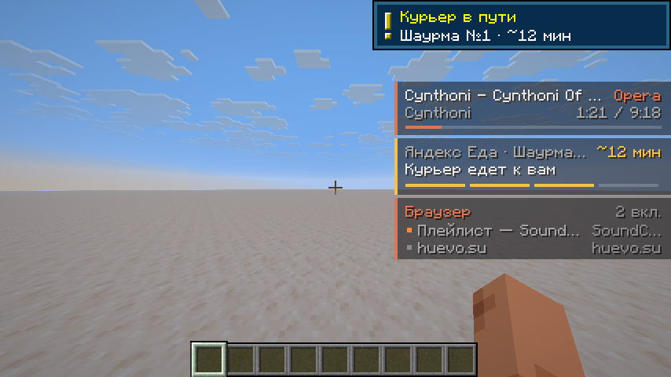
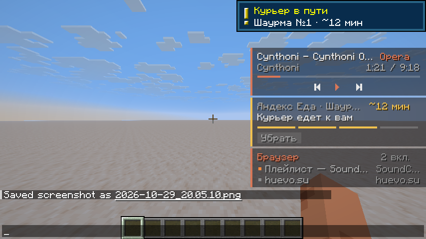
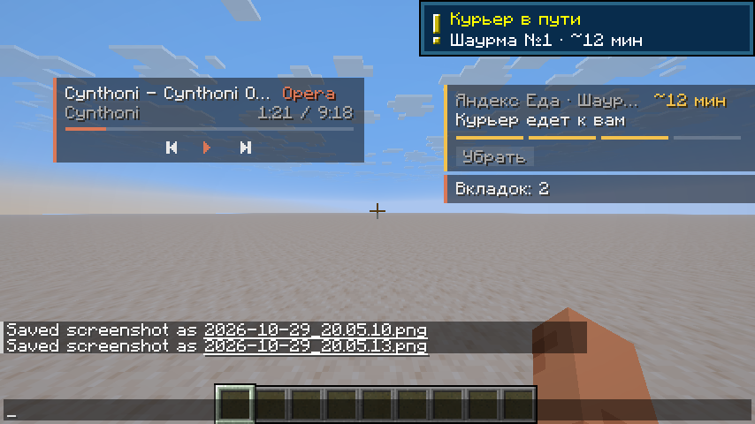
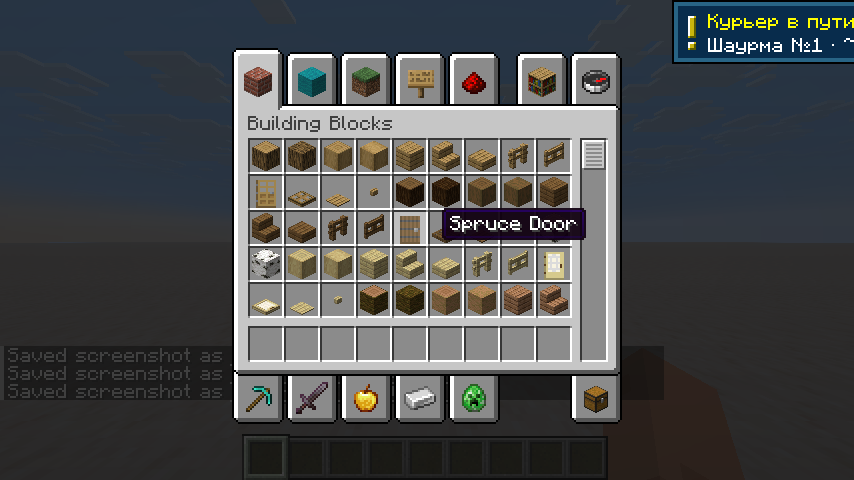
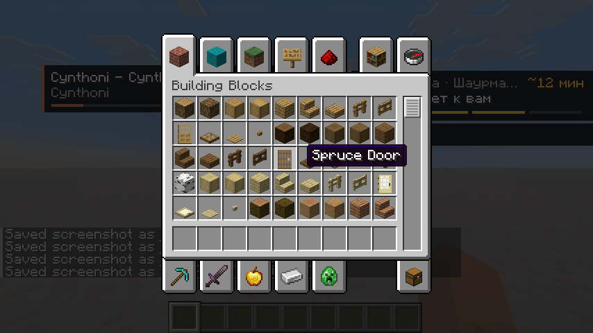
Берёт всё, что Windows знает как медиасессию: браузер (YouTube, YouTube Music, SoundCloud, VK, huevo.su, Яндекс Музыка, Spotify, Telegram Web), Telegram Desktop, Spotify и любые плееры. Если подключено расширение, источник подписывается по сайту вкладки и красится в его цвет; без расширения подписано приложение («Opera»).
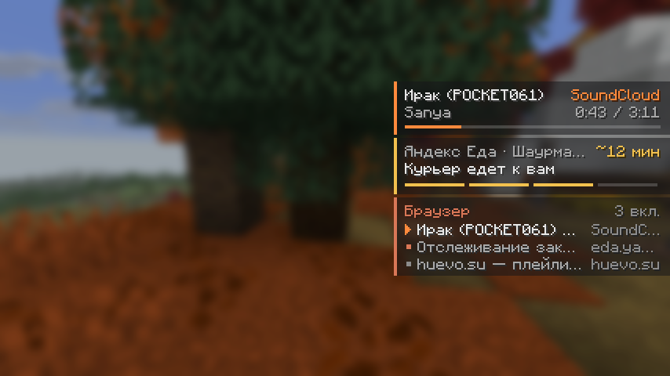
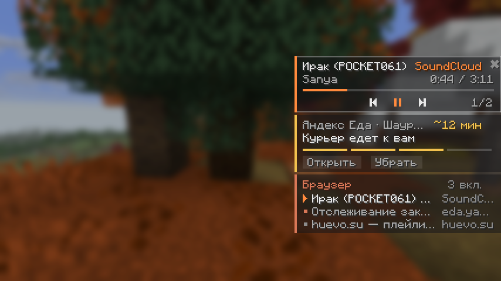
Расширение раз в 30 секунд спрашивает сайт Еды о текущем заказе, используя твой вход в браузере. Вкладку Еды держать открытой не нужно. Если она открыта, статус обновляется сразу, как только меняется на странице. Токен входа уходит только на eda.yandex.ru, в игру он не попадает.
Четыре сегмента под статусом показывают этап. Справа «~N мин», если сайт его знает. Доставленный или отменённый заказ висит 15 минут и исчезает.
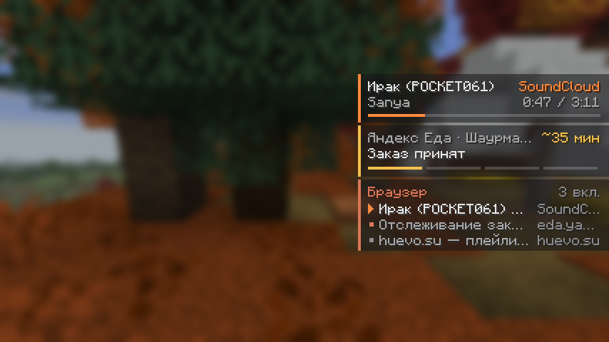
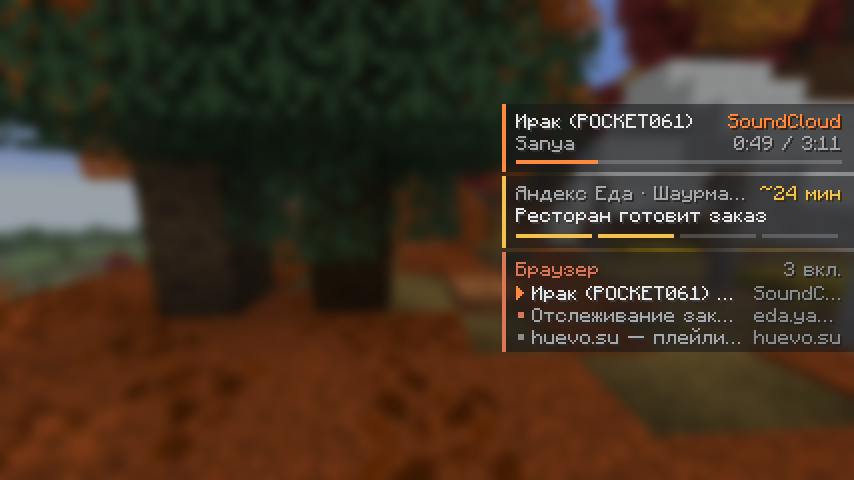
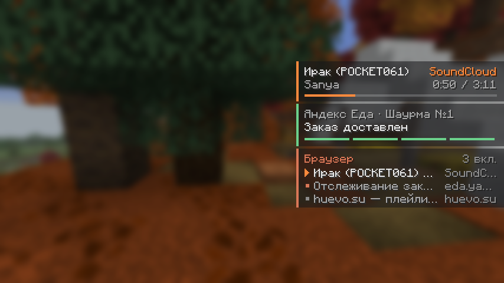
/ov food 25 Готовят. Этап угадывается по словам («в пути», «готовят»…).Показывает вкладки, которые играют звук (они отмечены ▶ и стоят первыми), и текущую вкладку каждого окна. Вкладки инкогнито не передаются. Клик по вкладке в чате выводит её на передний план в браузере.
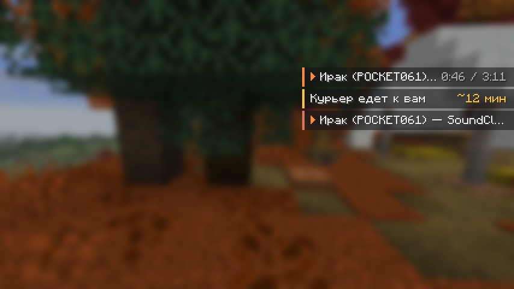
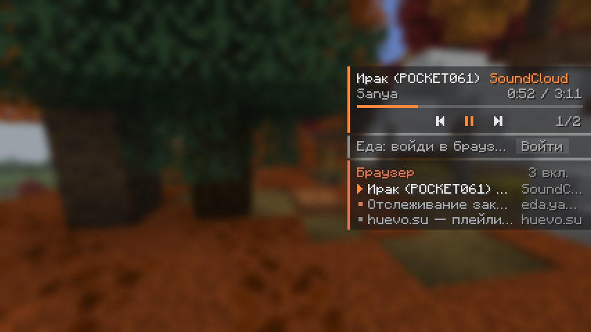
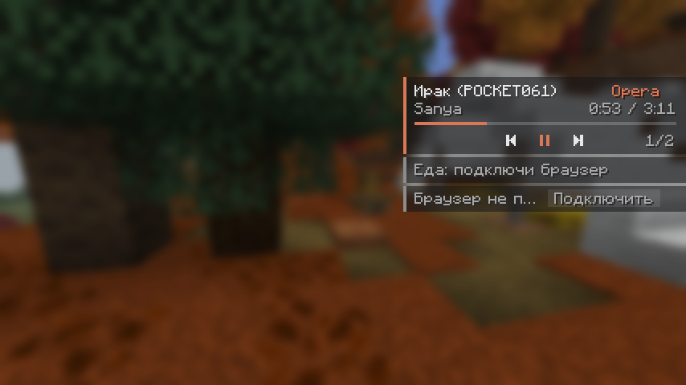
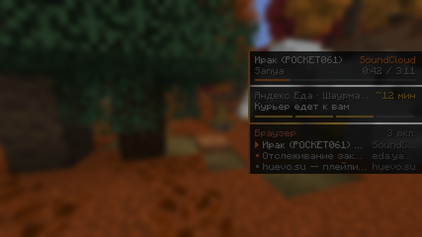
| Действие | Что делает |
|---|---|
| Тянуть ЛКМ | Переносит карточку. У краёв экрана примагничивается, карточки не налезают друг на друга. Место запоминается. |
| ПКМ по карточке | Свернуть в строку или развернуть обратно. |
| ✖ (при наведении) | Спрятать карточку. Вернуть: /ov show music или /ov show all. |
| Кнопки | ⏮ ⏯ ⏭, 1/2, Открыть, Убрать, Войти, Подключить, клик по вкладке. |
| Команда | Что делает |
|---|---|
/ov | Короткая справка в чат. |
/ov on · off | Включить или выключить весь оверлей. |
/ov show|hide|compact music|food|tabs | Показать, спрятать или свернуть одну карточку. /ov show all вернёт все. |
/ov screens hide|behind | Что делать в инвентаре и меню: прятать или приглушать. |
/ov opacity 0..100 | Плотность фона карточек (по умолчанию 55%). |
/ov reset | Вернуть карточки на места по умолчанию. |
/ov toggle|play|pause|next|prev|stop | Управление музыкой, той, что показана на карточке. |
/ov food [мин] <статус> | Заказ вручную. /ov food clear убирает. |
/ov ext | Подключить браузер: открывает страницу расширений и копирует путь к папке. |
/ov claude | Переустановить инструменты для Claude. |
/ov status | Что сейчас видит оверлей: музыка, браузер, Еда. |
Мод сам ставит Claude расширение overlaycraft в рабочую папку Claudecraft. Если инструменты не появились, выполни /cc reload. После этого можно писать обычными словами: «поставь на паузу», «следующий трек», «где мой заказ», «убери вкладки влево».
| Инструмент | Что умеет |
|---|---|
overlay_status | Всё, что знает оверлей: плееры, заказ, вкладки, состояние Еды, раскладка. |
overlay_media | Пауза, плей, следующий, предыдущий, стоп, какой плеер показывать. |
overlay_browser | Вывести вкладку вперёд или открыть страницу. |
overlay_food | Поставить заказ вручную или убрать. |
overlay_layout | Двигать, прятать, сворачивать карточки, менять прозрачность. |
/ov ext. Откроется страница расширений Opera (или Chrome, Edge, Яндекс Браузера), а путь к папке уже будет скопирован.Расширение общается только с игрой на 127.0.0.1 (порт 18745). Сайты к этому порту не допускаются, Claude ходит туда по токену из ~/.overlaycraft/connection.json.
gradlew :runClient запускает одну игру со всеми модами./claude theme) и меняются сами через пару секунд.config/overlaycraft/overlay.json.Скриншоты 01–09 сделаны в режиме превью с примерами данных. 10–14 сняты в настоящем тестовом мире, музыка на них твоя (стояла на паузе), заказ тестовый.